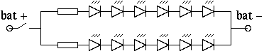
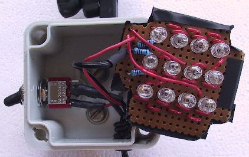

More bike and light articles
My goal for this light was to have a simple, reliable, bright tail light with a wide angle of visibility. I don't like flashing lights so I wanted mine to have a steady on mode only. This made the circuit much easier! The LEDs I chose were hyperbright wide angle LEDs. They are actually two 30 degree red LED devices stuck together in one clear plastic package, so the viewing angle is 60 degrees along one axis and 30 degees along the other. The resulting package has three leads; the center one is the shared anode (gets the positive voltage), and the two outer leads are the cathodes for the component LEDs (they get the negative voltage). Note that the description of these LEDs in the Maplin catalog is incorrect, as it says that the middle lead is the common cathode. For my light I aligned the LEDs so that the 60 degree axis was horizontal, giving lots of side visibility.
The Maplin catalog seems to suggest that all the their ultrabright and hyperbright LEDs should be run at 1.8V. However, they gave the current at 1.8V as 20mA for all the LEDs, most of which were the usual two-lead LEDs. I measured the current with 1.8V applied to both of the component LEDs in my 3-lead LED and got 30-33mA. I used 30mA in my calculations.
I planned to power this with my Lumicycle battery, which is a 13.2V NiMH battery. The idea is to have several LEDs in series with a resistor to limit the current going through the LEDs. Theoretically, I could have had 7 of the LEDs in a row (7 * 1.8V = 12.6V), with a resistor to make up the remaining 0.6V. This would have resulted in a resistor of 20ohms (R = V/I, where R = resistance in ohms, V = voltage in volts, and I = current in amps).
However, the battery's voltage varies over its discharge cycle, and using such a low-valued resistor would have allowed the current through the LEDs to vary a great deal over the operating voltage of the battery. So instead I used 6 LEDs, making 10.8V. To make up the remaining 2.4V, I needed a resistor of 80ohms. The closest we had in the box-o-resistors was 82ohms, so that's what went into the circuit.
Since I wanted a fairly bright light, I used two strings, each of which consisted of 6 LEDs and an 82ohm resistor, as shown in the circuit diagram below:
 The rectangles are the resistors, and the triangles with the vertical lines at the point are the LEDs (the slanted lines coming from them are meant to resemble light rays). The slanted line below the "bat +" is the switch. The current flows in the direction the triangle points (from left to right in the diagram). In diode terminology, for each LED the anode is the side with the flat part of the triangle, and it gets the positive voltage, while the cathode is the part next to the vertical line, and is gets the negative voltage.
If the battery you want to use has a different voltage than the Lumicycle battery, or if you want to use different LEDs, you can use similar reasoning to work out how many LEDs to have in a string and the size of the current-limiting resistor.
One problem was what to put the circuit in. What I really needed was a clear box, or at least a box with a clear lid. Maplin didn't have any appropriate boxes, but I hit pay dirt in the Farnell catalog. I used a bracket for a VistaLite 5-LED tail light to attach the light to the seat post: I have a couple of these VistaLites mounted directly to racks, so I had some spare mounts.
The electrical supply to the circuit was accomplished by an in-line (i.e. attached to wires) 2.5/5.5mm power socket. I needed an in-line socket because the Lumicycle power cord wasn't quite long enough to reach the seat post. If your power cords are longer, you'll be able to get away with using a panel-mount power socket mounted in the side of your box. The 2.5/5.5mm power plugs used by Lumicycle are common in the bike lighting world: I have owned VistaLite and NiteRider systems that used the same size plug. However, make sure you check what kind of power plug your battery has, and get a socket to match. In my parts list below I have included the in-line socket, although I didn't really have to buy it (I had one already, salvaged from an AC/DC converter).
The switch I used came from Maplin. It seems to be very similar to the toggle switches used in Lumicycle lighting heads. The switch has two positions and a very positive action: it doesn't jump from one position to the other with jolting caused by riding off-road. It actually has three contacts on the bottom: in one switch position the switch connects the middle contact to one side contact, and in the other position the middle is connected to the other side. I soldered it up with the positive connection of the battery going to the middle contact, and the positive voltage supply to the circuit coming from one of the side contacts. I also got a rubber waterproof switch cover to keep the circuit dry.
Well, that's about it. Drilling holes in the box, installing the socket and switch and wiring everything up was tedious but straightforward. The result is a very bright, lightweight, robust light that consumes about 0.8W of power. (P = IV, P = power in watts, I = current in amps, V = voltage; for my light voltage was 13.2V and current was .06 amps because I'm using two strings in parallel.) You can see it all wired up below.
 Part numbers
All the parts came from either Maplin or Farnell.
Item Source Part No. Price in UKP plastic case Farnell 767-748 6.00 switch Maplin FH00A 1.29 switch cover Maplin JR79L 1.59 in-line socket Maplin JK12N 0.89 strip board Maplin JP47 1.79 60 degree LEDs Maplin CH22Y 0.99 each In the above table I haven't accounted for things like wires, resistors, and the mounting bracket, as we already had these. The total cost was 23.44 UKP. Quite favorable in comparison to say the NiteRider tail light, which is somewhere around 50 quid!